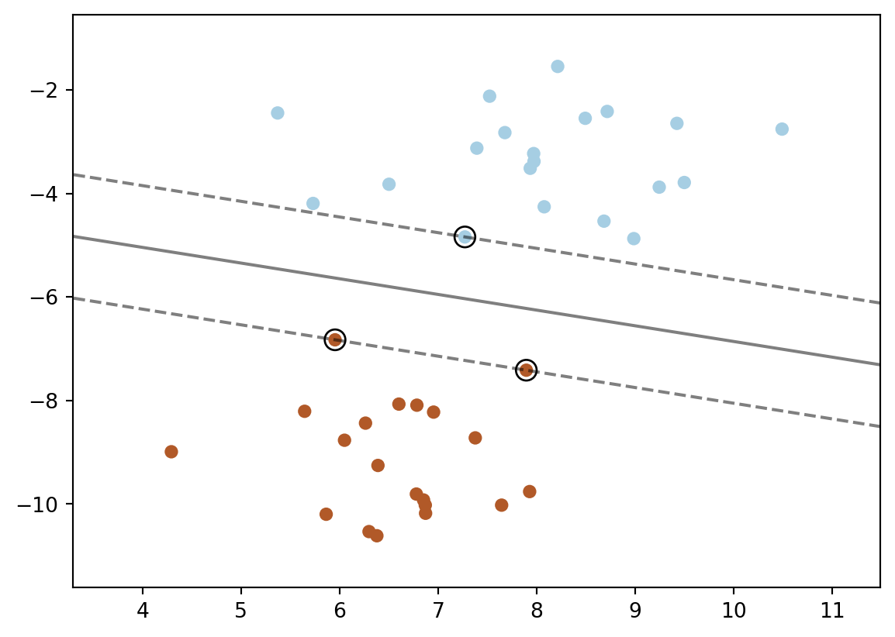

import matplotlib.pyplot as plt
from sklearn import svm
from sklearn.datasets import make_blobs
from sklearn.inspection import DecisionBoundaryDisplay
from scipy.stats import distributions
from numpy import sum
import numpy as np2 Cómo funciona el aprendizaje supervisado
Veremos el caso de las máquinas de soporte vectorial (SVM) para clasificación.
- Paso #1: Cargar librerías
- Paso #2: Crear datos
Se crean 40 puntos usando la función make_blobs. Esta crea un conjunto de puntos separados en dos grupos.
X, y = make_blobs(n_samples=40, centers=2, random_state=6)- Paso #3: Crear el modelo
clf = svm.SVC(kernel="linear", C=1000)- Paso #4: Entrenar el modelo
clf.fit(X, y)SVC(C=1000, kernel='linear')In a Jupyter environment, please rerun this cell to show the HTML representation or trust the notebook.
On GitHub, the HTML representation is unable to render, please try loading this page with nbviewer.org.
SVC(C=1000, kernel='linear')
- Paso #5: Visualizar el modelo
plt.scatter(X[:, 0], X[:, 1], c=y, s=30, cmap=plt.cm.Paired)
# plot the decision function
ax = plt.gca()
DecisionBoundaryDisplay.from_estimator(
clf,
X,
plot_method="contour",
colors="k",
levels=[-1, 0, 1],
alpha=0.5,
linestyles=["--", "-", "--"],
ax=ax,
)
# plot support vectors
ax.scatter(
clf.support_vectors_[:, 0],
clf.support_vectors_[:, 1],
s=100,
linewidth=1,
facecolors="none",
edgecolors="k",
)
plt.show()
Referencias
3 Estimación de parametros bayesiano
alpha = 10
beta = 10
n = 20
Nsamp = 201 # no of points to sample at
p = np.linspace(0, 1, Nsamp)
deltap = 1./(Nsamp-1) # step size between samples of p
prior = distributions.beta.pdf(p, alpha, beta)
for i in range(1, 9):
r = 2**i
n = (3.0/2.0)*r
like = distributions.binom.pmf(r, n, p)
like = like/(deltap*sum(like)) # for plotting convenience only
post = distributions.beta.pdf(p, alpha+r, beta+n-r)
# make the figure
plt.figure()
plt.plot(p, post, 'k', label='posterior')
plt.plot(p, like, 'r', label='likelihood')
plt.plot(p, prior, 'b', label='prior')
plt.xlabel('p')
plt.ylabel('PDF')
plt.legend(loc='best')
plt.title('r/n={}/{:.0f}'.format(r, n))
plt.show()